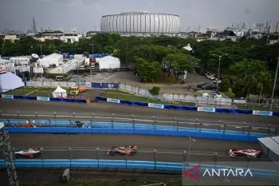
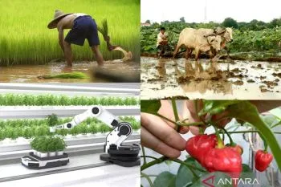
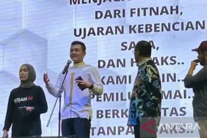

welcome to my website

Balapan mobil listrik internasional seri Jakarta di Jakarta International E-Prix Circuit (JIEC) Ancol Jakarta
Suasana balapan di Jakarta International E-Prix Circuit (JIEC) di kawasan Ancol tak kalah panas.
Deru mesin bertenaga listrik berpacu di tengah cuaca terik disertai debu yang terangkat ke udara.
Debu menjadi tantangan dalam balapan,
bahkan laju kendaraan listrik ini mampu mengangkat debu yang mengendap di
lintasan naik ke udara.
Suara mesin bertenaga listrik melesat cepat membuat suara riuh terkagum keluar
dari bibir penonton yang hadir langsung di lintasan balap di pesisir utara Jakarta tersebut.
Sorak-sorai ribuan penonton dan warga Jakarta yang hadir di JIEC menjadi candu.
Mereka sangat menikmati perlombaan mobil masa depan yang sudah beralih dari bahan
bakar fosil menjadi mobil bertenaga listrik yang lebih ramah lingkungan.
kategori berita : Sport
Natuna (ANTARA) - Pada Minggu pagi di Bulan Juni 2025, sinar Matahari perlahan menyingkap tirai kabut di perairan Pulau Serasan. Saat itu laut tampak berkilau, seolah menyambut hari yang istimewa.
Serasan, salah satu pulau terluar NKRI yang berada Kabupaten Natuna,
Kepulauan Riau.
Pulau ini adalah beranda utara Indonesia yang berada di jalur strategis,
Alur Laut Kepulauan Indonesia I (ALKI ) I jalur pelayaran internasional
penting dalam konektivitas laut dunia.
Pagi itu, keindahan alam Serasan bukan satu-satunya yang
mencuri perhatian, namun belasan kapal layar mewah yang
berlabuh dengan tenang di antara pulau-pulau, juga
menghadirkan siluet megah di atas air yang jernih.
kategori berita : Alam

Natuna (ANTARA) - Pagi itu, 11 Juni 2025, suasana di jalanan wilayah batas negeri terasa berbeda dari biasanya, karena kendaraan bermotor roda tiga berwarna merah putih yang dilengkapi dengan kotak tempat barang di bagian belakang, kerap terlihat melintas.
Kendaraan yang dimodifikasi,
seperti lori kotak itu terdapat tulisan
"Badan Gizi Nasional", lengkap dengan logo burung Garuda yang gagah
di bagian depan dan belakang kotak,
sementara di sisi kanan kirinya tercetak jelas tulisan "Satuan Pelayanan Pemenuhan Gizi" (SPPG).
Kendaraan itu menempuh rute ke
sejumlah sekolah dasar (SD) dan
satu sekolah menengah pertama (SMP) di ibu kota Kabupaten Natuna, Provinsi Kepulauan Riau.
kategori berita : sosial

Bertani dalam berbagai versi dan inovasi
Jumlah penduduk Indonesia saat ini sekitar 284,43 juta jiwa (BPS, 2025) dengan jumlah petani berdasarkan data Sensus Pertanian 2023 hanya 29,36 juta. Artinya dalam hitungan sedikit serampangan, kurang dari 30 juta unit usaha pertanian harus memberi makan bagi 284 juta orang.
Tentu jumlah yang timpang, apalagi bila ditelisik bahwa lahan pertanian
terus menyusut dan jumlah petani yang berkurang seiring berjalannya tahun.
kategori sosial :

Mencegah berita hoaks melalui literasi
Masih banyak masyarakat yang memercayai informasi palsu alias
hoaks akibat ketidaktahuan, bahkan membagikan dan meneruskanberita itu yang pada
akhirnya membuat seolah-olah menjadi hal yang benar.
Kementerian Komunikasi dan Digital (Komdigi) RI
mengidentifikasi terdapat 1.923 konten hoaks, berita bohong, dan informasi palsu yang beredar di website dan platform digital sepanjang tahun 2024.
Tim Analisis dan Identifikasi Sebaran Konten (AIS)
Subdit Pengendalian Konten Ditjen Aptika
menemukenali kategori konten hoaks terbanyak berisi penipuan, yaitu sebanyak 890 konten. Sementara untuk temuan yang paling sedikit dalam kategori mitos, dengan enam konten.
kategori berita : menggunakan media online